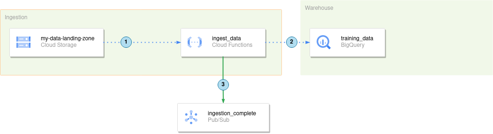

Load a file from Cloud Storage to a Bigquery Table using a Cloud Function.¶

In this exercise, we will create the ingest_data Cloud Function, that will perform the following tasks:
-
The
ingest_datafunction will actively monitor themy-data-landing-zoneGoogle Cloud Storage bucket for new files. This is achieved by configuring a trigger in the Cloud Function to listen for object creation events in the specified bucket. -
When a new file is detected, the
ingest_datafunction will read the contents of the file and write the data into a BigQuery table namedtraining_data. The function will leverage the BigQuery Python client library to facilitate this process, efficiently importing the data from the file into the specified table. -
After successfully importing the data into BigQuery, the
ingest_datafunction will send a message to theingestion_completetopic in Google Cloud Pub/Sub. This message will notify all subscribers that new data has been loaded into BigQuery, allowing them to react accordingly, such as by initiating further data processing tasks.
The Cloud Function ingest_data will utilize the Google Cloud Storage, BigQuery, and Pub/Sub client libraries for these tasks. Our goal in this exercise is to develop the code for this function and deploy it to Google Cloud Platform.
- You can adapt the function to create flags/categories for TRAIN/TEST/VALIDATION at runtime, assuming your table was created with that field.
For this you will need these resources:
- One Bigquery
data setand one bigquerytable(The initial schema is available at./infrastructure/bigquery/titanic_schema.json) - One GCS Bucket named
[prefix]-landing-zone-bucketwhere you will drop the files once the function is ready - One GCS Bucket named
[prefix]-functions-bucketwhere you will deploy the function source code from. - One Topic named
[prefix]-ingestion-complete, to where the function will send a message once complete.
The outline of the Cloud Function code is available at ./functions/manual_exercises/ingest_data/.
Here are the steps you should follow:
- Create Clients: Use the Google Cloud Storage API, BigQuery API, and PubSub API to create respective client objects.
# INSTRUMENTATION [1]: Use the storage API to make a Client Object
# INSTRUMENTATION [2]: Use the bigquery API to make a Client Object
# INSTRUMENTATION [3]: Use the pubsub_v1 API to make a PublisherClient Object
- Set Environment Variables: Set your project configurations like project ID, dataset ID, table name, and topic ID.
# IMPLEMENTATION [4]: Set your configurations here
- Insert Rows into BigQuery: Find the correct method to insert rows as JSON into the BigQuery table.
- Hint: Find all the bigquery
Client()methods here
# IMPLEMENTATION [5]: Find the correct method to use here
# IMPLEMENTATION [6]: Find the correct method with the PublisherClient to publish a message
- (Optional) Assign Set Types: You can define a train/test/validation column here. Define that column in your BigQuery table too.
# OPTIONAL [1]: You can define a train / test / validation column here. Define that column in your BigQuery table too.
Deployment:
gcloud functions deploy prefix_ingest_data \
--region=europe-west3 \
--runtime=python39 \
--source=gs://prefix-functions-bucket/ingest_data.zip \
--entry-point=main \
--trigger-bucket=prefix-landing-bucket
Code:¶
Remember, you can still find it in the correct folder.
main
¶
main(event_data, context)
¶
Entrypoint of the cloud function
Parameters:
| Name | Type | Description | Default |
|---|---|---|---|
event_data |
dict
|
Event payload |
required |
context |
dict
|
Event context. |
required |
The --trigger-bucket event_data is the following: https://github.com/googleapis/google-cloudevents/blob/main/proto/google/events/cloud/storage/v1/data.proto
event_data: {
storageClass: string
size: string
id: string
selfLink: string
timeStorageClassUpdated: Timestamp
updated: Timestamp
crc32c: string
generation: string
timeCreated: Timestamp
mediaLink: string
etag: string
name: string
bucket: string
md5Hash: string
metageneration: string
contentType: string
kind: string
}
The important keys to us now are name, which is the name of the file
that triggered the event, and bucket, which is the bucket this
cloud function is listening.
Source code in functions/manual_exercises/ingest_data/main.py
8 9 10 11 12 13 14 15 16 17 18 19 20 21 22 23 24 25 26 27 28 29 30 31 32 33 34 35 36 37 38 39 40 41 42 43 44 45 46 47 48 49 50 51 52 53 54 55 56 57 58 59 60 61 62 63 64 65 66 67 68 69 70 71 72 73 74 75 76 77 78 79 80 81 82 83 84 85 86 87 88 89 90 91 92 93 94 95 96 97 98 | |